Reshaping health systems around prevention.
Pathology identified years before symptoms.
Altering the course of disease, not only symptoms.
A population-scale route to fewer dementias.
The care of Alzheimer's is changing fast. This Commission sets out to develop seamless clinical pathways from primary to specialist care worldwide, with prevention as the driving force.
Uniting all levels of care to match — and possibly overcome — the success of vascular prevention.
How the Commission intends to turn a fragmented landscape into connected, implementable care.
Analyse the current state of ADRD care globally — what exists, where, and for whom.
Identify and tackle the organizational and knowledge bottlenecks that hold systems back.
Outline realistic solutions that work across every health system and reimbursement model.
Spark global innovation by driving pilot projects with clinicians, researchers and innovators.
Across primary, secondary and tertiary care — moving every tier toward a mature, prevention-led pathway.
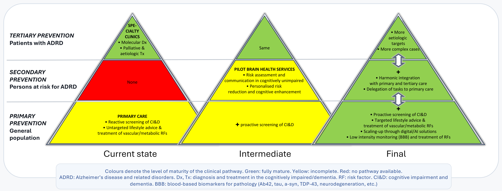
A chair, two co-chairs, a dedicated Lancet editor and a global body of senior researchers.
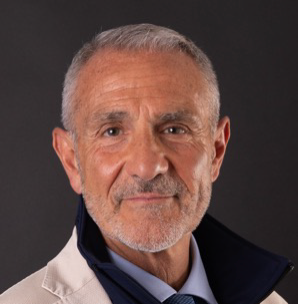
University of Geneva & Geneva University Hospitals, Switzerland
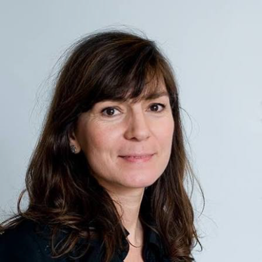
Mass General Brigham & Harvard Medical School, USA
Federal University of Minas Gerais, Belo Horizonte, Brazil
A global body of senior researchers, with young researchers encouraged to collaborate.
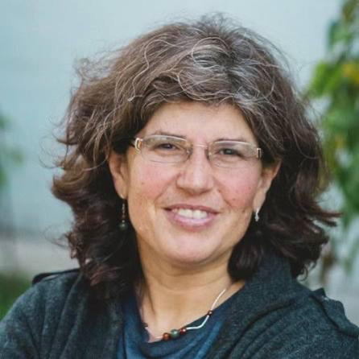
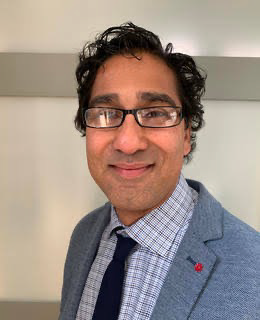
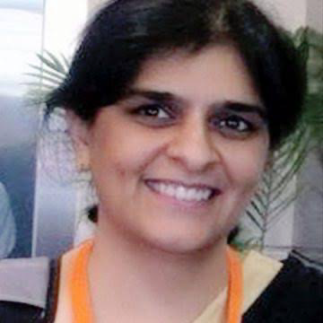
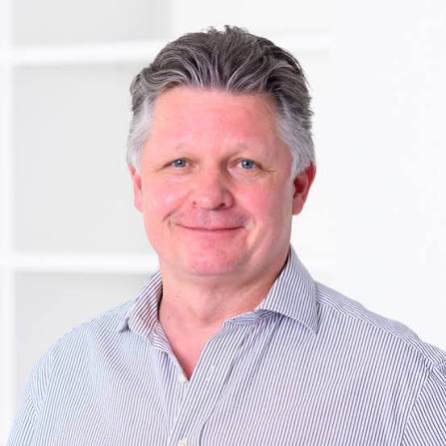
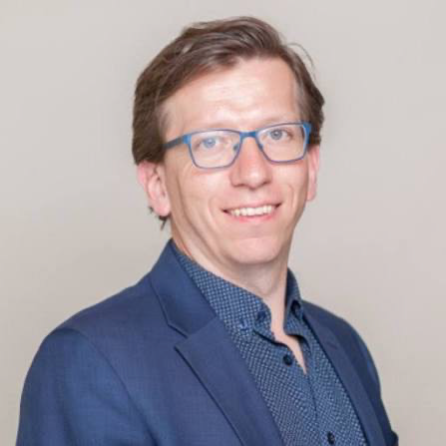
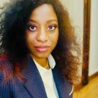
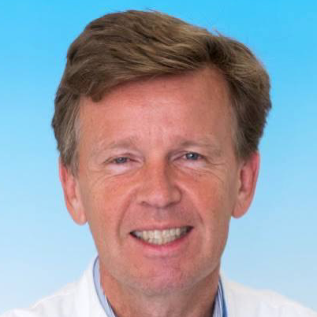
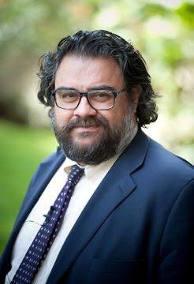
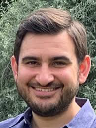
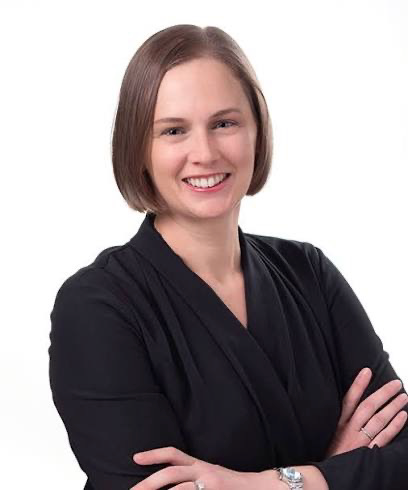
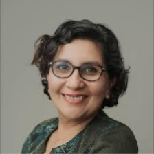
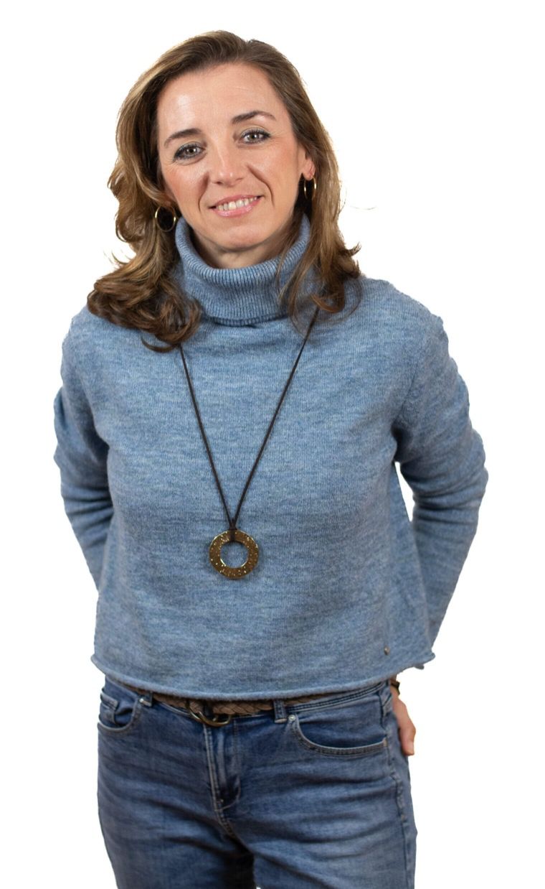
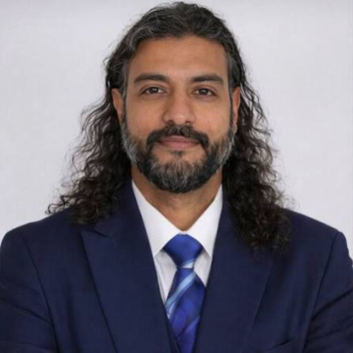
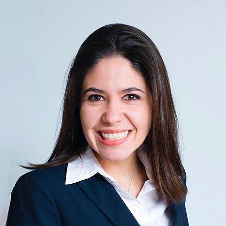
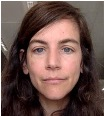
London, UK, during AAIC.
Inaugural working meeting — date and venue to be defined.
An ongoing programme, supported by instrumental papers along the way.
The Commission's full findings and recommendations.